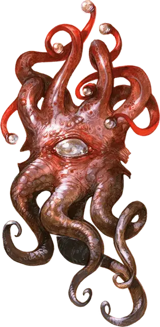

Свидетель разума
Mindwitness
Большая Аберрация, законно-злая

Класс Доспеха 15 (природный доспех)
Хиты 75 (10к10 + 20)
Скорость летая 20 футов (парит)
| мод | спас | ||
|---|---|---|---|
| СИЛ | 10 | +0 | +0 |
| ЛОВ | 14 | +2 | +2 |
| ТЕЛ | 14 | +2 | +2 |
| мод | спас | ||
|---|---|---|---|
| ИНТ | 15 | +2 | +5 |
| МДР | 15 | +2 | +5 |
| ХАР | 10 | +0 | +0 |
Навыки Восприятие +8
Чувства тёмное зрение 120 футов, пассивное Восприятие 18
Языки Общий, Глубинная речь, Телепатия 600 фт.
Опасность 5 (1800 опыта)
Бонус мастерства +3
Среда обитания Подземье
Особенности
Усилитель телепатии. Когда свидетель разума получает телепатическое сообщение, он может передавать его телепатически до семи существам одновременно, которые находятся не далее 600 футов от него и которых он может видеть.
Действия
Мультиатака. Свидетель разума совершает две атаки: одну щупальцем, а вторую укусом.
Укус. . Рукопашная атака оружием: +5 к попаданию, досягаемость 5 футов, одно существо. Попадание: 16 (4к6 + 2) колющего урона.
Щупальце. . Рукопашная атака оружием: +5 к попаданию, досягаемость 5 футов, одно существо. Попадание: 20 (4к8 + 2) урона психической энергией. Если размер цели Большой или меньше, то она будет схвачена и должна будет преуспеть в спасброске Интеллекта Сл 13 или будет ошеломлена до тех пор, пока не закончится захват.
Лучи из глаз. . Свидетель разума выстреливает тремя случайными из следующих магических лучей из глаза (перебрасывайте повторы), выбирая от одной до трех целей, которые он может видеть не далее 120 футов от него:
• 1. Луч отвращения. Целевое существо должно пройти спасбросок Харизмы Сл 13. При провале цель получает помеху на броски на попадание на 1 минуту. Цель может повторять спасбросок в конце каждого своего хода и окончить эффект при успехе.
• 2. Луч страха. Целевое существо должно успешно пройти спасбросок Мудрости Сл 13 или стать испуганным на 1 минуту. Цель может повторять спасбросок в конце каждого своего хода и окончить эффект при успехе.
• 3.Психический луч. Цель должна успешно пройти спасбросок Интеллекта Сл 13 или получить 27 (6к8) урона психической энергией.
• 4.Замедляющий луч. Целевое существо должно пройти спасбросок Ловкости 13. При провале скорость существа уменьшается вдвое. Кроме того, существо не может совершать реакции и может совершать в свой ход либо действие, либо бонусное действие, но не оба сразу. Существо может повторять спасбросок в конце каждого своего хода и окончить этот эффект при успехе.
• 5. Ошеломляющий луч. Целевое существо должно успешно пройти спасбросок Телосложения Сл 13 или стать ошеломленным на 1 минуту. Цель может повторять спасбросок в конце каждого своего хода и окончить эффект при успехе.
• 6. Телекинетический луч. Если цель существо, то оно должно пройти спасбросок Силы Сл 13. При провале свидетель разума сдвигает его на 30 футов в любом направлении и оно опутано хваткой телекинетического луча до начала следующего хода свидетеля разума или до того как он станет недееспособен. Если целью является объект, весящий 300 фунтов или меньше, который никто не несет и он ни на ком не надет, то он телепатически сдвигается на 30 футов в любом направлении. Свидетель разума так же может осуществлять этим лучом тонкие манипуляции, такие как работа простыми инструментами или открытие двери или контейнера.
Описание
Если оглушить бехолдера и безопасно притащить в бассейн соляного раствора старшего мозга, то его можно превратить в свидетеля разума посредством цереморфоза. Процесс цереморфоза трансформирует четыре глазных стебелька в щупальца, похожие на щупальца свежевателя разума и изменяет один из глазных лучей бехолдера.
Менее интеллектуальные чем бехолдеры и менее опасные для колонии, свидетели разума псионически отмечены преданностью старшему мозгу и подчинением командам иллитидов, делая их такими же покорными как и пожирателей интеллекта.
Усилитель Телепатии. Первичная функция свидетеля разума – это усиление телепатической коммуникации в колонии свежевателей разума. Существо во время телепатического разговора со свидетелем разума может передавать разговор телепатически через него до семи другим существам, которых может видеть свидетель разума, что позволяет осуществить быстрое распространение приказов и другую информацию.
Искатели Одиночества. Отделенный от хозяев иллитидов свидетель разума разыскивает других телепатических существ, чтобы те говорили ему что делать. Свидетели разума бывает вступает в союз с фламфами и телепатическими планарными существами, такими как демоны, и меняют свое мировоззрение в зависимости от новых хозяев.